看護 Nursing
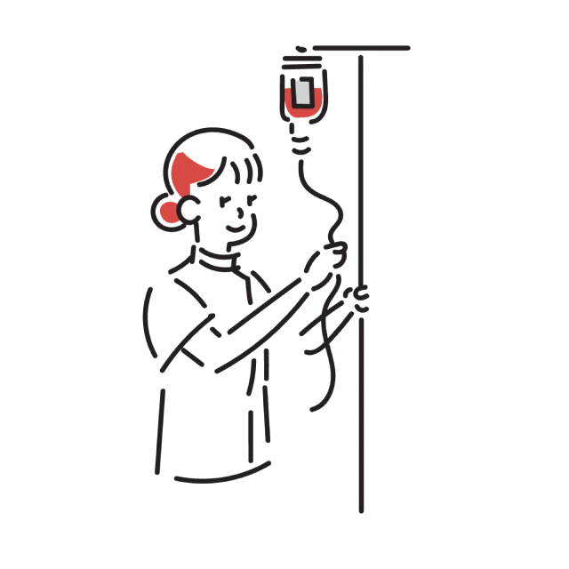
- 体調確認・異常の早期発見
- 服薬管理と指導
- 褥瘡処置・点滴などの医療処置
- 排便コントロール
- 終末期のターミナルケア
TEL 03-1111-2222
受付時間 9:00-18:00
看護とリハビリ、
それぞれの専門性をひとつのチームに。
日々の体調管理から、医療処置、自宅でのリハビリまで。
住み慣れた場所での暮らしを、看護とリハビリの専門職が支えます。
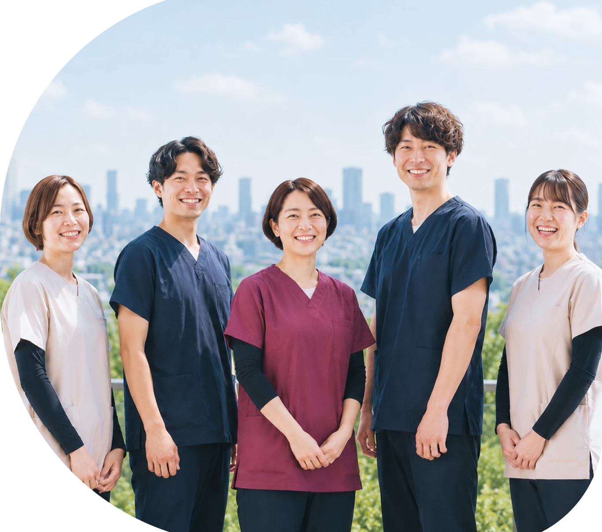
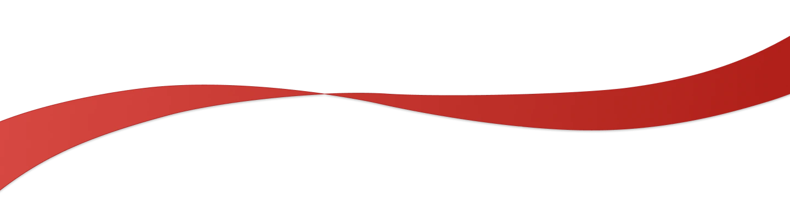
SERVICES
看護とリハビリを切り分けせず、一つのチームとして連携して支えます。

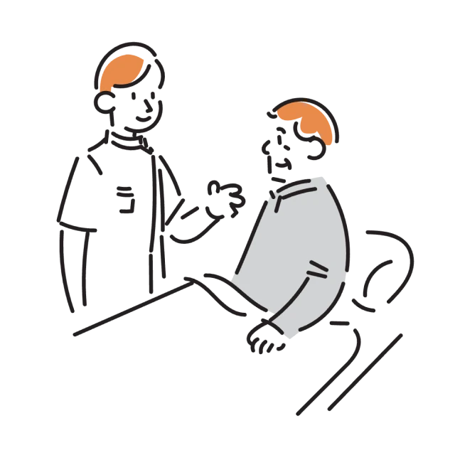
CASES
「このケース、お願いできるかな？」という段階で構いません。
医療依存度の高いケースから、退院後のリハビリまで、まずは一度ご相談ください。
“医療処置が多く、退院後の訪問看護が見つからない。”
人工呼吸器・気管切開・終末期など、専門的な医療管理が必要なケースにも対応します。
対象病院の退院支援看護師・相談員・地域連携室
“対応できるだけではなく、安心して任せられる訪問看護を探している。”
医療依存度の高い方には、疾患や医療処置の経験を持つスタッフを主担当として配置し、チーム全体で情報を共有します。
対象重症利用者を担当する居宅ケアマネジャー
“退院後の生活に不安があり、まずはリハビリから相談したい。”
脳血管疾患・パーキンソン病・整形疾患・廃用など、幅広い在宅リハビリに対応。必要に応じて看護師とも連携します。
対象訪問リハビリを探している居宅ケアマネジャー
TRIAL REHABILITATION
訪問リハビリを利用するか迷っている方へ。30分のお試しリハビリを実施しています。
実際の生活環境や身体状況を確認しながら、理学療法士が現在のお困りごとや今後のリハビリについてご提案します。
STRENGTH
救急・重症管理、緩和ケア、神経・呼吸器、循環器、リハビリ。
異なる臨床経験を持つスタッフが、疾患や状態に合わせて専門性を発揮。
その分野を得意とするスタッフを主担当として配置する。
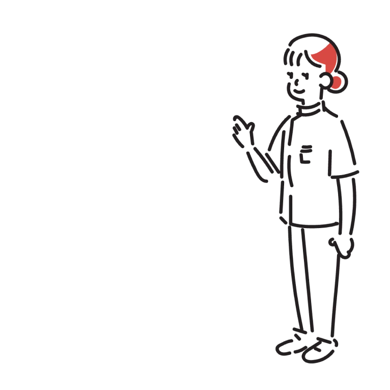
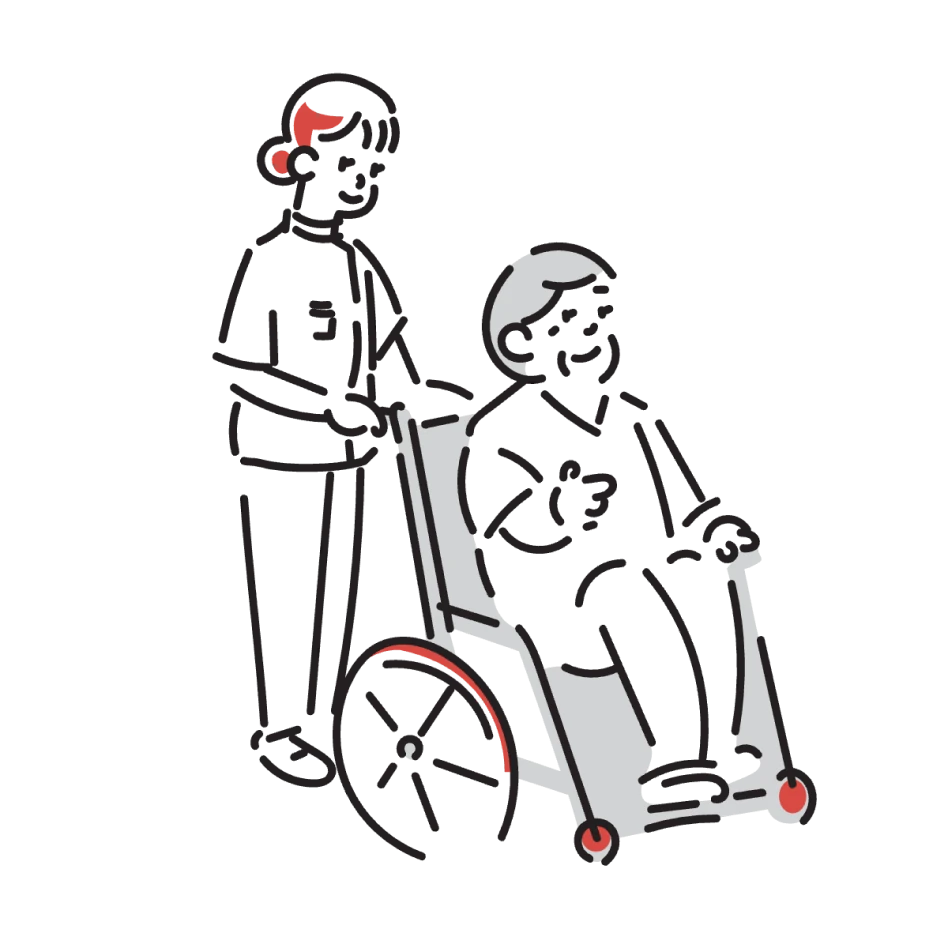
看護師とPTが病状管理、身体機能、ADL、
生活環境を共有し、必要な支援の変化に柔軟に対応する。
ーTASUKI独自の強みー
訪問後には状態変化や急変・入院リスクを共有し、注意が必要なケースでは「今夜何が起こり得るか」「変化があった場合にどう対応するか」まで検討してオンコール担当へ引き継ぐ。
『一人の経験を、一人だけのものにしない。』
がん・緩和ケア、神経難病・呼吸器、循環器、重症管理の知識・判断をケース共有によってチームへ還元し、ステーション全体の看護力を高める。
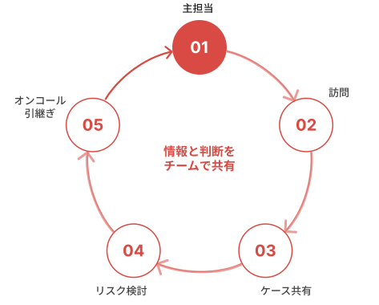
COVERAGE
上記以外の疾患・医療処置についてもお気軽にお問い合わせください。
TEL 03-1111-2222
受付時間 9:00-18:00
STAFF
救急・重症管理、緩和ケア、神経・呼吸器、循環器、リハビリ。異なる臨床経験を持つスタッフが、それぞれの強みを活かしながら、一つのチームとして利用者さまを支えています。
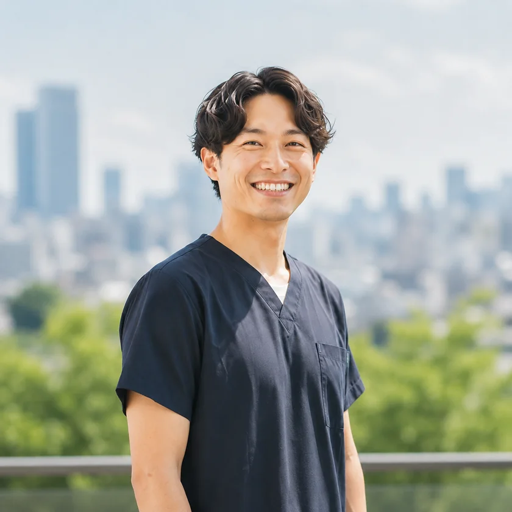
管理者／看護師 救命・ICU／重症管理／人工呼吸器／気管切開
「家で過ごしたい」を、安心して選べる地域へ。
大学病院の救命・ICU領域で重症患者の看護を経験した後、大手訪問看護ステーションへ。在宅医療で受け入れ先が見つからない方や専門知識を必要とするケースに出会い、「受け入れるなら、最後まで責任を持てる看護を」という思いから開設。
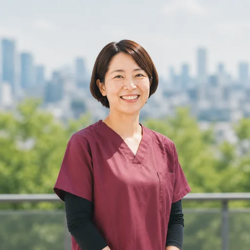
看護師 がん／緩和ケア／医療用麻薬／在宅看取り
「最期まで、その人らしく過ごせる時間を。」
緩和ケア領域と訪問看護の経験を持ち、疼痛管理、終末期ケア、家族支援を得意とする。管理者の前職からの仲間で、理念に共感し開設メンバーとして参加。
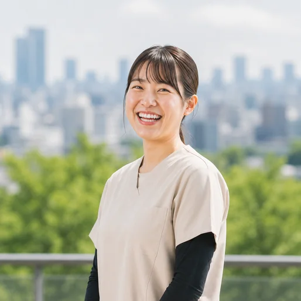
看護師 神経難病／呼吸器／人工呼吸器／気管切開
「病気ではなく、その方の生活を見る。」
神経内科・呼吸器内科病棟で4年間勤務後、訪問看護へ。パーキンソン病、ALS、呼吸器疾患、人工呼吸器、NPPV、気管切開等を経験。訪問看護1年目として同行・症例共有を重ねる。
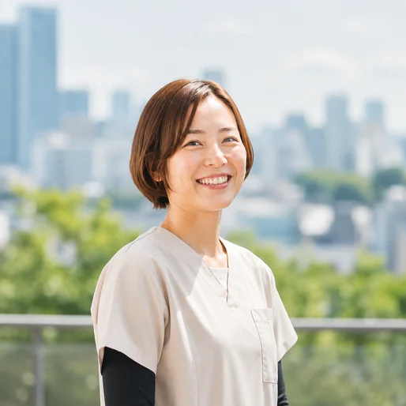
看護師 循環器／心不全／心臓血管外科／再入院予防
「退院したその先まで、看護をつなげたい。」
循環器・心臓血管外科を中心に急性期医療を経験。管理者とは病院時代の先輩・後輩。入退院を繰り返す患者を通じ、退院後の生活を支える看護に関心を持った。
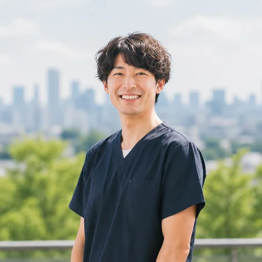
理学療法士 脳血管／パーキンソン病／整形／廃用／生活期リハ
「できることを、暮らしの中で増やしていく。」
脳梗塞後、パーキンソン病、整形疾患、廃用症候群等に対応。看護師と日々共有し、医療管理が必要な方にも状態に合わせたリハビリを提供。
医療事務・地域連携 「相談しやすいステーションの、最初の窓口に。」
医療・介護保険請求、レセプト、指示書等を担当。新規依頼と関係機関からの連絡にも対応し、看護師がケア・情報共有に集中できる環境を支える。
ON-CALL
在宅療養では夜間・休日にも状態が変化する。
日中訪問で変化があった方、急変・入院リスクが高い方について帰社後に申し送りする。
「今夜何が起こり得るか」「その場合どう対応するか」までチームで共有し、オンコール担当へ引き継ぐ。
PARTNERS
受け入れ可否が分からない段階でも構いません。ご家族の状況などを伺い、対応方法を一緒に検討します。医療依存度の高いケースや退院まで時間がないケースも、まずはお問い合わせください。
対象
病院・地域連携室／居宅介護支援事業所／地域包括支援センター／医療機関
医療依存度の高さだけで、在宅療養をあきらめる必要はありません。
「このケースは難しいかもしれない」と思ったときこそ、私たちにご相談ください。